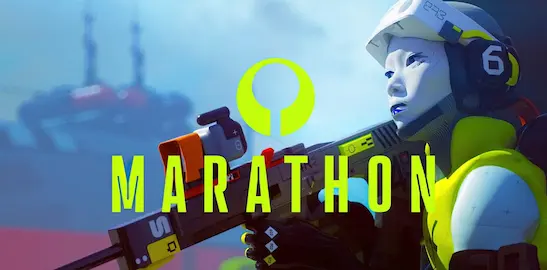

Para muchos, Bungie es el estudio detrás de Halo y de los diez años de Destiny que marcaron el género looter-shooter. Pero antes de todo eso existÃa Marathon: una trilogÃa de shooters de ciencia ficción para Macintosh que sentó las bases del worldbuilding y la narrativa ambiental que después definirÃan a la compañÃa. En marzo de 2026, Bungie —ahora bajo el paraguas de Sony— ha lanzado un nuevo Marathon que no es una secuela directa ni un remake, sino algo completamente distinto: un extraction shooter de corte competitivo por equipos ambientado en el universo original.
En los extraction shooters, el bucle de juego se basa en entrar a una zona, conseguir botÃn o completar objetivos, y salir vivo — con la amenaza constante de otros equipos rivales intentando hacer exactamente lo mismo. Es el género que popularizaron Escape from Tarkov y Hunt: Showdown, y que en los últimos años ha buscado sin demasiado éxito su gran hit de masas. La apuesta de Bungie es traer la pulcritud de diseño y el trabajo de feel de disparo que definen a Destiny al formato extraction, con una selección de runners —los personajes jugables— que aportan habilidades y estilos de juego diferenciados.
El lanzamiento llega después de una beta cerrada que generó opiniones mixtas: entusiasmo por la fluidez del movimiento y la solidez del combate, dudas sobre si el loop de juego es suficientemente atractivo a largo plazo para el público general. Bungie tiene historial demostrado en mantener comunidades activas durante años —Destiny lleva más de una década en pie— y eso se nota en cómo Marathon gestiona la progresión y el riesgo/recompensa de cada incursión.
El contexto de fondo es importante: Bungie ha pasado por un año convulso, con despidos masivos en 2024 y mayor control operativo de Sony. Marathon llega como el lanzamiento que la compañÃa necesitaba que funcionase. Los primeros datos de jugadores y la respuesta de la comunidad decidirán si el nombre histórico y el saber hacer de Bungie son suficientes para hacerse un hueco duradero en un género donde la retención lo es absolutamente todo.